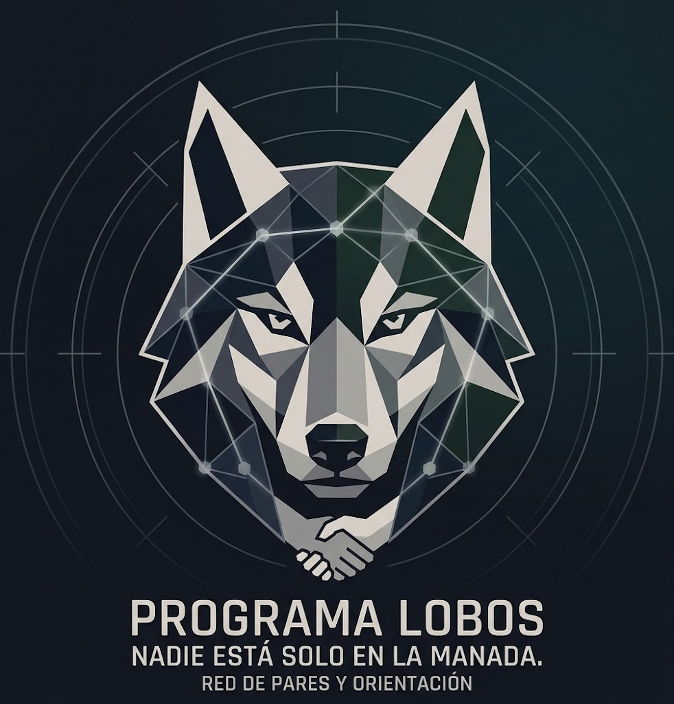

General Cabrera, Córdoba"Nadie está solo en la manada"
Un espacio donde hombres que atraviesan crisis personales — separaciones, violencia familiar, aislamiento — encuentran apoyo de otro hombre que ya pasó por algo similar. Sin diagnósticos, sin burocracia, sin stigma.
La Asociación Argentina de Salud Mental acaba de declarar la situación de suicidio en Argentina como emergencia sanitaria. La tasa de 11,8 suicidios cada 100.000 habitantes es la más alta de la historia.
"La Argentina registra una tasa de 11,8 suicidios cada 100.000 habitantes, la más alta de su historia, configurando una situación de gravedad sanitaria y social."
— Asociación Argentina de Salud Mental, Agosto 2025En General Cabrera, desde el Centro de Monitoreo Municipal observamos regularmente intentos de suicidio y denuncias por violencia familiar donde los hombres quedan atrapados en el aislamiento, sin saber a dónde recurrir.
El Programa Lobos es una red de apoyo de hombre a hombre. No es terapia profesional, no es una guardia de emergencia. Es un espacio previo: alguien que escucha, que entiende porque ya pasó por algo similar, y que puede acompañar antes de que la crisis se desborde.
Sin diagnósticos, sin informes psiquiátricos, sin sentirte enfermo. Solo un hombre que te escucha.
Te acompaña alguien que atravesó una separación, violencia familiar o aislamiento y salió adelante.
Si necesitás hospital, abogado o psicólogo, te ayudamos a acceder. No te dejamos solo.
Intervenimos antes de la crisis. Cuando todavía se puede contener, antes del desborde.
El Programa Lobos se integra al Centro de Monitoreo Municipal. No requiere infraestructura nueva ni presupuesto adicional.
El caso llega por llamado, WhatsApp o derivación interna. Es recepcionado por el personal del Centro.
El referente del programa realiza contacto inicial. Sin burocracia, sin diagnóstico: solo escucha.
Se coordina encuentro con un "par de apoyo" capacitado: café, caminata, llamada. Lo que prefiera la persona.
Hospital, policía, psicólogo, abogado municipal. Solo si la situación lo requiere.
$0 en infraestructura y personal. Se utiliza el Centro de Monitoreo existente y se coordina con recursos municipales disponibles.
Área de Prevención y Convivencia
Municipalidad de General Cabrera
Centro de Monitoreo Municipal
Primer contacto y coordinación
Hombres de la comunidad que atravesaron crisis similares, están estabilizados y reciben capacitación básica en escucha activa. Actúan de forma voluntaria.
Si estás atravesando una crisis personal, una separación, o sentís que te estás aislando, escribinos. Un par te va a responder.
"Si estás en riesgo inmediato o tenés pensamientos suicidas concretos, llamá al 107 o al 135. Nosotros somos el paso anterior, no la emergencia."